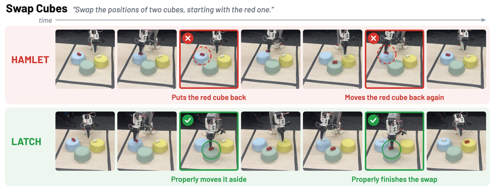
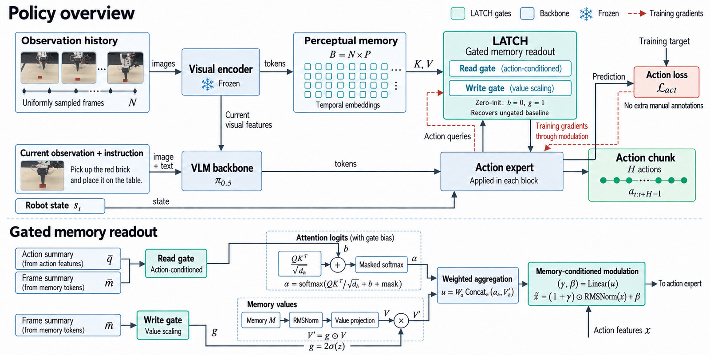
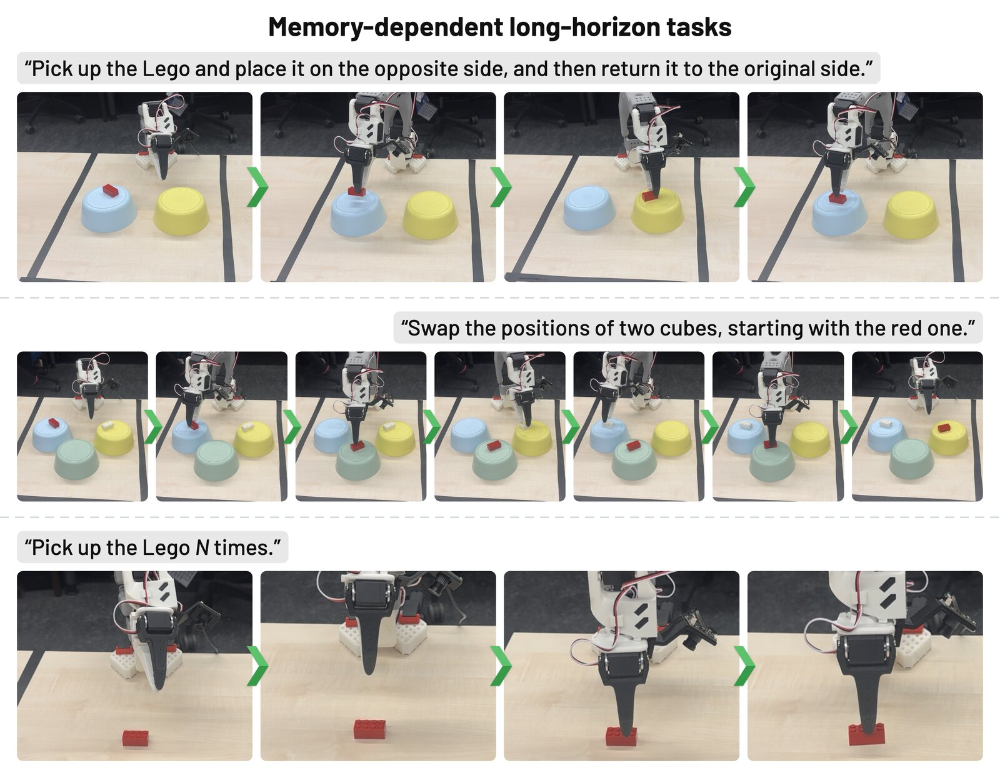
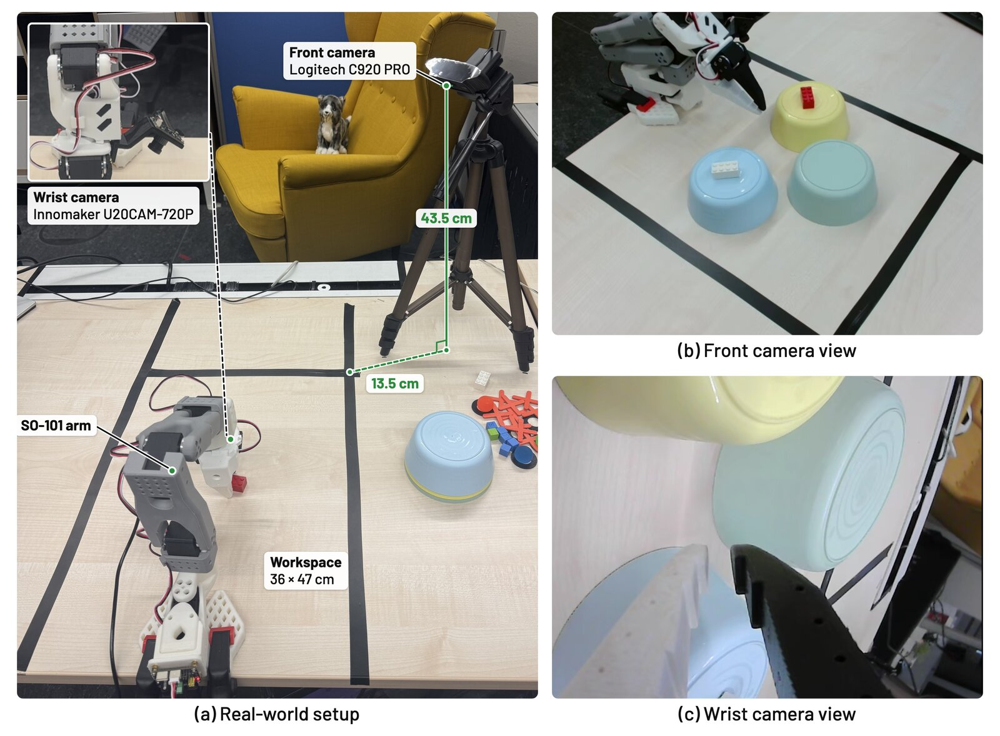

Abstract
Non-Markovian manipulation requires a vision-language-action (VLA) policy to know which past observations still matter for the action being produced. Existing memories either add symbolic task state through a separate policy trained on subtask or keyframe annotation, or keep perceptual history with no task-general way to prioritize it.
We introduce LATCH, which learns this priority inside the policy: a read gate and a write gate decide where the action queries look in a uniformly sampled visual history and how strongly each frame counts, trained with the action objective alone. On RoboMME it lifts π0.5 from 18.8% to 47.2%, the highest of all evaluated memory methods, and it carries over to GR00T N1.6, dual-arm RMBench, LIBERO, and a real SO-101 arm.
Method
The policy keeps a perceptual memory of 32 frames sampled uniformly from the episode so far; the action expert cross-attends to it in every block. LATCH adds two learned, per-frame gates to that readout.

Read gate: where to look
Adds one bias per frame to the attention logits, softmax(QKᵀ/√d + b). It sees the action state, so a frame can matter more or less as the episode unfolds.
Write gate: how loudly a frame speaks
Scales each frame's values after normalization, V′ = g·V, g ∈ [0, 2], from the frame content alone.
Both gates are zero-initialized, so training starts exactly from the ungated memory policy and departs from equal weighting only where the action loss asks for it.
Research Questions
Seven questions from the paper, each answered with the evidence behind it. Click a question to open its answer.
How does LATCH compare with perceptual memory methods?
It is the strongest perceptual memory on both backbones. RoboMME: 47.2% vs 45.7% for MME-VLA∗ and 26.5% for HAMLET∗ on π0.5; 23.6% vs 21.5% and 16.2% on GR00T N1.6. The gains are spread over the families, largest on Reference and Counting.
RoboMME table →How does LATCH compare with hybrid memory methods that require additional manual annotation?
Without any annotation, it is ahead on RoboMME and level on RMBench. 47.2% vs 42.4% for MemER: LATCH leads where the evidence is motion, timing, or a count; MemER where one nameable fact must be recalled (Permanence, Reference). RMBench: 36.3% vs 37.8% for Mem-0, within a seed spread.
RoboMME table → RMBench table →Does LATCH use its memory reliably, or can the memory confuse the policy?
It uses memory as evidence of task progress. It leads Counting on both backbones (69.8%, 38.0%), keeps the exact count on the real arm in 13 of 25 trials (next best 8), missing by overshooting rather than losing the count, and costs nothing on LIBERO.
Pick-up-N trials → LIBERO table →Does LATCH generalize across backbones?
Yes. On GR00T N1.6, with no change beyond the backbone's own recipe, the ordering is reproduced (LATCH, then MME-VLA, HAMLET, and the memory-free backbone), with the margin again in Counting and Reference.
RoboMME table →Does LATCH transfer across embodiments, datasets, and the real world?
Yes. It is the best perceptual memory on dual-arm RMBench (36.3% vs 25.6% for MME-VLA and 10.4% for π0.5, 10-episode protocol), and on the SO-101 arm it solves the two ordering tasks in 8 and 10 of 10 trials.
RMBench table → Real-robot rollouts →Does LATCH affect regular tasks?
No. On the largely Markovian LIBERO suites it stays within about the seed variance of its backbone (97.0% vs 97.1% on π0.5, 95.6% vs 96.8% on GR00T N1.6), so the memory can stay switched on.
LIBERO table →Do the gates work? Which design choices matter, and at what cost?
The gates rank the frames the policy needs: keeping only their top-ranked third of the memory retains 38.1% success vs 32.2% for the bottom third. Trained alone, the write gate leans to Permanence and the read gate to Imitation (tendencies at this sample size). The warm start is the largest factor (more than 20 points), 32 frames is the best budget, and at inference the gates add about 8 ms per call.
Show ablation table
Ablations on the eight-task RoboMME subset: success rate (%) Variant Count. Perm. Ref. Imit. Overall Gates, trained from the warm start Write gate only 50.0 41.7 35.0 74.6 50.3 ± 4.0 Read gate only 51.7 36.7 36.7 80.0 51.2 ± 1.2 Frame selection at inference, trained LATCH Top-ranked third 36.7 35.0 36.7 43.9 38.1 ± 2.8 Bottom-ranked third 28.3 31.7 33.3 35.4 32.2 ± 0.8 Without the warm start (from base π0.5) No gate 26.7 35.0 28.3 23.3 28.3 ± 4.0 Write + read gates 30.0 46.7 21.7 26.7 31.2 ± 3.3 Memory budget, write + read gates 8 frames 41.7 35.6 30.0 56.7 41.0 ± 4.0 16 frames 43.3 32.0 28.3 66.3 42.5 ± 1.4 32 frames (full model) 55.0 40.0 35.6 80.0 52.6 ± 3.4 64 frames 45.7 35.0 31.7 67.6 45.0 ± 1.7 128 frames 45.0 33.3 16.7 56.7 37.9 ± 0.7 LATCH (full model, 32 frames) 55.0 40.0 35.6 80.0 52.6 ± 3.4 Eight-task subset (two per family, first 10 episodes each), 3 seeds; ± std on Overall. Bold / underline: best / second per column within a block. The full model (bold row) is the reference for every block except frame selection.
Show speed and inference cost
Inference cost on π0.5 Policy Call (ms) Ratio Replan (ms) Ratio π0.5 46.1 1.00× 46.1 1.00× + MME-VLA 59.5 1.29× 79.2 1.72× + LATCH (ours) 67.4 1.46× 87.8 1.90× + HAMLET 78.2 1.70× 83.6 1.81× LIBERO policies, batch 1, one GH200 (shared, so read ratios); ratio to the memory-free policy; a replan is a history push plus a call every 16 steps. Bold / underline: lowest / second lowest among memory policies.
LATCH on π0.5 by memory budget Frames Call (ms) GPU (GB) 0 (no memory) 42.8 6.6 8 63.1 8.4 16 63.7 8.4 32 65.1 8.4 64 66.8 8.2 One A100, median of 30 calls, batch 1. Going from 8 to 64 frames adds under 4 ms and no memory.
Simulated Benchmarks
Three simulated benchmarks: RoboMME (16 memory tasks), RMBench (9 dual-arm memory tasks), and LIBERO (regular tasks, where memory should cost nothing).
RoboMME 16 memory tasks · rollouts of LATCH on GR00T N1.6 (successful episodes)
RMBench 9 dual-arm memory tasks · benchmark demonstrations
LIBERO 4 suites, 40 tasks · benchmark demonstrations, one task per suite
(π0.5 alone: 18.8%)
(GR00T alone: 9.7%)
(π0.5 alone: 10.4%)
needed at train or test time
| Method | Memory | Annot. | Count. | Perm. | Ref. | Imit. | Overall |
|---|---|---|---|---|---|---|---|
| π0.5 backbone | |||||||
| π0.5† | none | ✗ | 28.8 | 17.0 | 17.2 | 8.8 | 17.9 |
| + action history† | actions | ✗ | 29.1 | 22.8 | 15.9 | 11.2 | 19.7 |
| π0.5∗ | none | ✗ | 28.8 | 19.3 | 16.2 | 10.8 | 18.8 ± 0.6 |
| HAMLET∗ | moment tokens | ✗ | 35.2 | 25.0 | 24.8 | 21.2 | 26.5 ± 1.1 |
| MemER† | keyframes + subtasks | ✓ | 48.8 | 53.2 | 38.0 | 29.5 | 42.4 |
| MME-VLA† | uniform frames | ✗ | 65.2 | 25.1 | 36.3 | 51.4 | 44.5 |
| MME-VLA‡ | uniform frames | ✗ | 68.5 | 25.0 | 36.7 | 49.5 | 44.9 ± 0.9 |
| MME-VLA∗ | uniform frames | ✗ | 68.0 | 27.2 | 34.7 | 52.8 | 45.7 ± 0.6 |
| LATCH (ours) | gated uniform frames | ✗ | 69.8 | 28.2 | 37.3 | 53.7 | 47.2 ± 0.9 |
| GR00T N1.6 backbone | |||||||
| GR00T N1.6 | none | ✗ | 15.2 | 7.7 | 11.2 | 4.8 | 9.7 ± 0.4 |
| HAMLET | moment tokens | ✗ | 21.3 | 17.8 | 16.0 | 9.5 | 16.2 ± 0.2 |
| MME-VLA | uniform frames | ✗ | 34.2 | 19.0 | 16.0 | 16.7 | 21.5 ± 0.1 |
| LATCH (ours) | gated uniform frames | ✗ | 38.0 | 20.5 | 19.3 | 16.5 | 23.6 ± 0.6 |
† reported in RoboMME · ‡ authors' released checkpoint, our harness · ∗ matched control (same 30k steps, schedule, batch, and hardware as LATCH's gate phase, no gates) · unmarked: our runs. Mean of 3 seeds, ± std. Annot.: needs subtask or keyframe labels. Bold / underline: best / second per backbone.
| Method | Annot. | M(1) | M(n) | All |
|---|---|---|---|---|
| Mem-0 | ✓ | 55.3 ± 3.1 | 15.8 ± 15.3 | 37.8 ± 6.8 |
| π0.5 | ✗ | 14.7 ± 7.0 | 5.0 ± 5.0 | 10.4 ± 6.1 |
| HAMLET | ✗ | 21.3 ± 4.2 | 18.3 ± 1.4 | 20.0 ± 1.9 |
| MME-VLA | ✗ | 35.3 ± 2.3 | 13.3 ± 8.0 | 25.6 ± 4.8 |
| LATCH (ours) | ✗ | 50.7 ± 4.6 | 18.3 ± 6.3 | 36.3 ± 3.6 |
Reduced protocol: first 10 of the 100 official episodes per task (full evaluation is slow), 3 seeds; training uses the full benchmark. Mem-0 is re-run in our harness; its M(n) planner is retrained, so its M(n) score is a lower bound.
| Policy | Spatial | Object | Goal | Long | Mean |
|---|---|---|---|---|---|
| π0.5 | 96.9 ± 1.6 | 98.6 ± 0.2 | 97.7 ± 0.2 | 95.3 ± 0.5 | 97.1 ± 0.2 |
| HAMLET | 97.9 ± 0.6 | 99.1 ± 0.3 | 97.6 ± 1.3 | 95.2 ± 1.1 | 97.4 ± 0.2 |
| MME-VLA | 97.5 ± 0.5 | 98.3 ± 0.6 | 97.5 ± 0.6 | 95.7 ± 1.6 | 97.3 ± 0.6 |
| LATCH (ours) | 98.1 ± 1.1 | 98.5 ± 0.8 | 96.9 ± 2.9 | 94.4 ± 0.8 | 97.0 ± 0.5 |
| GR00T N1.6 | 98.1 ± 0.6 | 99.7 ± 0.1 | 97.3 ± 0.2 | 91.9 ± 2.0 | 96.8 ± 0.4 |
| HAMLET | 96.7 ± 1.0 | 99.4 ± 0.5 | 97.2 ± 0.9 | 93.4 ± 1.2 | 96.7 ± 0.7 |
| MME-VLA | 96.8 ± 0.6 | 98.5 ± 0.7 | 96.3 ± 0.1 | 92.9 ± 0.7 | 96.2 ± 0.3 |
| LATCH (ours) | 94.7 ± 0.8 | 99.4 ± 0.0 | 96.2 ± 0.7 | 92.2 ± 2.3 | 95.6 ± 0.7 |
10 tasks per suite, 50 initial states each, 3 seeds. Bold / underline: best / second per column and backbone.
Real-Robot Rollouts
Three tasks on an SO-101 arm where the current frame does not reveal the task state. All policies are π0.5 models trained on the same 200 demonstrations; a trial counts only if its memory-dependent part is correct.
| Task | π0.5 | HAMLET | MME-VLA | LATCH (ours) |
|---|---|---|---|---|
| Return Lego to original side | 1/10 | 1/10 | 8/10 | 8/10 |
| Swap Lego, starting with red | 2/10 | 3/10 | 10/10 | 10/10 |
| Pick up Lego N times, exact | 2/25 | 3/25 | 8/25 | 13/25 |
| N = 1 | ↑✗↑✗✓ | ✓↑✓↑✓ | ✓✗✗✗✓ | ✓✓✓✓✓ |
| N = 2 | ✗✗↓✓↑ | ↑↑✗↑↑ | ✗✗✓✓✓ | ✓✓✓✓✗ |
| N = 3 | ✗✗↑↓✗ | ↑↑↑↑↓ | ↑✗↑✓✓ | ✓↑✓↑↑ |
| N = 4 | ↑↑↑↑↓ | ↑✗✗↓↑ | ✗✗↑↑↑ | ↑✗↑↑↑ |
| N = 5 | ↑↑↑↑↑ | ↑✗↑↑↑ | ↓↓↓✓↓ | ✓↑✓↑↑ |
Pick-up trials per N, in order: ✓ exact · ↑ past N · ↓ short · ✗ failed.

Show real-world setup

Rollouts: π0.5 failures vs. LATCH successes
Swap Cubes
“Swap the positions of two cubes, starting with the red one.”
Opposite and Back
“Pick up the Lego and place it on the opposite side, and then return it to the original side.”
Pick Up N Times
“Pick up the Lego 2 times.”
Browse every rollout
All 243 completed rollouts of the four models, unedited and unlabelled (restarts included, so more clips than scored trials). Pick a task, then a model and a rollout in each player.
BibTeX
@article{latch2026,
title = {{LATCH}: Action-Guided Perceptual Memory for Vision-Language-Action Models},
author = {Anonymous Authors},
journal = {Under review},
year = {2026}
}